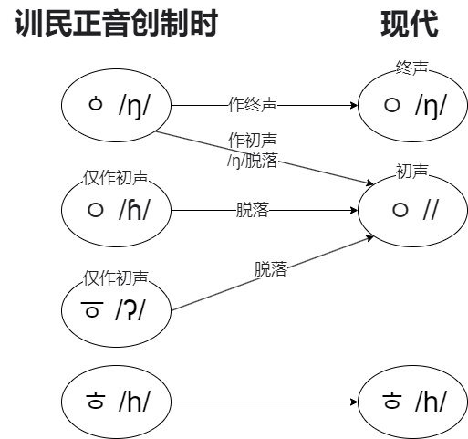

训民正音的语音科学性
训民正音的语音科学性
1443 年，朝鲜世宗大王遣人完成《训民正音》，1446 年颁布使用。自此，人类历史上少有的被广泛使用的人造文字诞生了。本文将简要剖析训民正音作为一种文字，在表达语音方面的科学性。
辅音：以调音部位为抽象符号
训民正音的辅音整体在语音上是很科学的，用符号抽象了辅音的调音部位，并基于符号的基础形态，用几笔改动描述了调音方式的变化。只有一个例外：ㆁ 应该是个软腭音。
软腭音
软腭音以 ㄱ /k/ 为基础形态，抽象了口腔后部上方的调音部位“软腭”。
同类音：
- ㅋ /kʰ/
齿龈音
齿龈音以 ㄴ /n/ 为基础形态，抽象了口腔前部下方的调音部位“齿龈”。
同类音：
- ㄷ /t/，由 ㄴ 上方加一条线构成
- ㅌ /tʰ/
- ㄹ /ɾ/ 或 /l/（现代作终声可读 /ɭ/）
齿龈擦音
齿龈擦音以 ㅅ /s/ 为基础形态，抽象了“舌尖顶在牙齿上”的场景。
同类音：
- ㅈ /ts/
- ㅊ /tsʰ/
- ㅿ /z/，16世纪末期后不再使用
- 表记汉语时的齿头音 ᄼ、ᄽ、ᅎ、ᅏ、ᅔ 和正齿音 ᄾ、ᄿ、ᅐ、ᅑ、ᅕ
双唇音
双唇音以 ㅁ /m/ 为基础形态，抽象了“口”腔的外表本身，即利用表面的“双唇”调音。
同类音：
- ㅂ /p/，由 ㅁ 上方加两条线构成
- ㅍ /pʰ/，由 ㅁ 左右各延两条线构成
历史上用过的字母：
- ㅸ /β/~/w/，现在也可以表记 /v/（吉阿吉阿语）或 /ʋ/（希顶语）
- ㆄ /ɸ/，现在也可以表记 /f/（希顶语）
- ᄬ /v/~/β/，历史上用于表记汉语
喉音
喉音以 ㅇ /ɦ/ 为基础形态，抽象了调音部位“声门”。
同类音：
- ㆆ /ʔ/
- ㆁ /ŋ/，这个其实是软腭音，但当时世宗大王一行人认为其声与 ㅇ 更相似
- ㅎ /h/
喉音的演变历史如下图所示：

元音：以天地人为基本单元
元音的设计基于以下的“天地人”三个基本元音：
- ㆍ（아래아）/ʌ/：抽象“天圆”，形如太阳，代表开口音。
- ㅡ（으）/ɯ/：抽象“地平”，形如地平线，代表闭口或中性音。
- ㅣ（이）/i/：抽象“人直”，形如站立的人，代表高舌位音。
所有元音都由这三个基本元音组合而成。后来：
- 为了书写简便，复合元音中的 ㆍ 变成了竖线或横线。
- 首音节的 ㆍ 合并到 ㅏ ，非首音节的 ㆍ 合并到 ㅡ 和 ㅓ、ㅗ，ㆍ 被彻底弃用
因此变成了现在的样子。
以下音值均为对创制时（晚期中世朝鲜语）音值的某种推测，可能并不准确。
单复合音
- ㅏ = ㅣ 在右边加上 ㆍ → /a/
- ㅓ = ㅣ 在左边加上 ㆍ → /ə/
- ㅗ = ㅡ 在上面加上 ㆍ → /o/
- ㅜ = ㅡ 在下面加上 ㆍ → /u/
- ㅑ = ㅣ 在右边加上2个 ㆍ → /ja/
- ㅕ = ㅣ 在左边加上2个 ㆍ → /jə/
- ㅛ = ㅣ 在上面加上2个 ㆍ → /jo/
- ㅠ = ㅣ 在下面加上2个 ㆍ → /ju/
多复合音
- ㅢ = ㅡ + ㅣ → /ɯi/
- ㅐ = ㅏ + ㅣ → /ai/
- ㅔ = ㅓ + ㅣ → /əɪ/
- ㅒ = ㅑ + ㅣ → /jaɪ/
- ㅖ = ㅕ + ㅣ → /jəɪ/
- ㅘ、ㅙ、ㅚ、ㅝ、ㅞ、ㅟ 等，同理，不再赘述。由于元音和谐，ㅗ + ㅔ 和 ㅜ + ㅐ 等组合是不存在的。
- 另有一些现在不再使用的复合音 ㆋ /jwej/ ㆊ /jwe/ ㆌ /juj/ ㆉ /joj/
元音的阴阳性与元音和谐
据阴阳思想：
- ㆍ 在 ㅡ 上面或 ㅣ 右边时，组合出来的元音是阳性元音。中世朝鲜语的 ㆍ 单独也是阳性元音。
- ㆍ 在 ㅡ 下面或 ㅣ 左边时，组合出来的元音是阴性元音。ㅡ 单独也是阴性元音。ㅢ 也应归类为阴性元音。
- ㅣ 单独是中性元音。在现代韩语语法中，也可以归类为阴性元音。
韩语不允许阴性元音和阳性元音相组合，而阴性和阴性之间，阳性和阳性之间可组合，中性可自由与阴/阳性组合，这就是韩语中的元音和谐。因此产生了语法中的词干词缀一致、元音缩略等现象。在过去的韩语，组词和许多语法都更严格地遵循元音和谐，随着语言的发展和与汉语的接触，韩语元音和谐越来越宽松，演变为今天的模样。
有人认为元音分阴阳性与舌位有关，这种观点站不住脚，因为与推理出的音值不能匹配。为什么韩语元音会分阴阳，分阴阳的依据是什么，在学术界仍存在许多争论。不过有一些模糊的规律可供参考：
- 阳性元音词往往有“小少弱明轻”的特点，阴性元音词往往有“大多强暗重”的特点。例如
- 찰랑찰랑（小幅度摇晃，轻快飘逸）vs 철렁철렁（大幅度摇晃，扑腾扑腾）
- 파랗다（蓝色，浅蓝色）vs 퍼렇다（深蓝色）、하얗다（纯白色）vs 허옇다（灰白色）。韩语的固有颜色词“青红皂白黄”都有类似的“分阴阳”的特点。
结论
可见：
- 单复合音的结构不太规律，例如 ㅣ 在右边加上 ㆍ 不读 /iʌ/ 而读 /a/。
- 复合音中，元音的舌位对应不具备直观性和科学性，相对辅音不便记忆。
- 很多音的音值已经与现代韩语不同，而且 ㆍ 已被弃用。
因此，从“天地人”入手学习韩文中的元音并不方便，不过用于讲解元音和谐还是不错的。